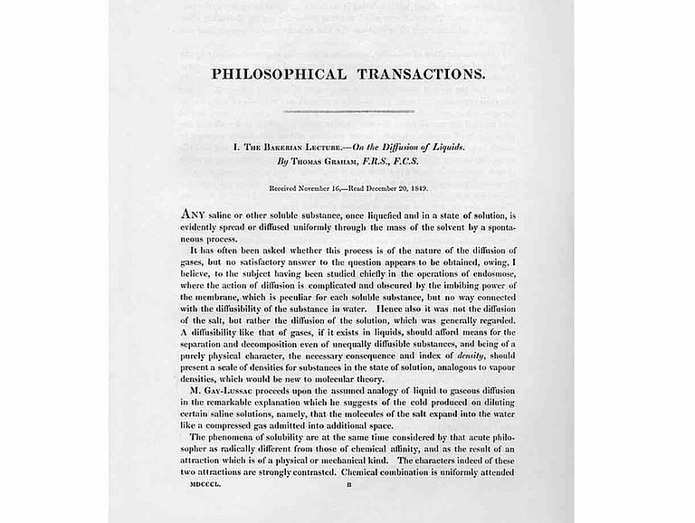
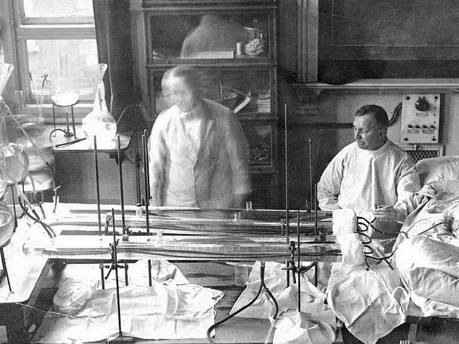
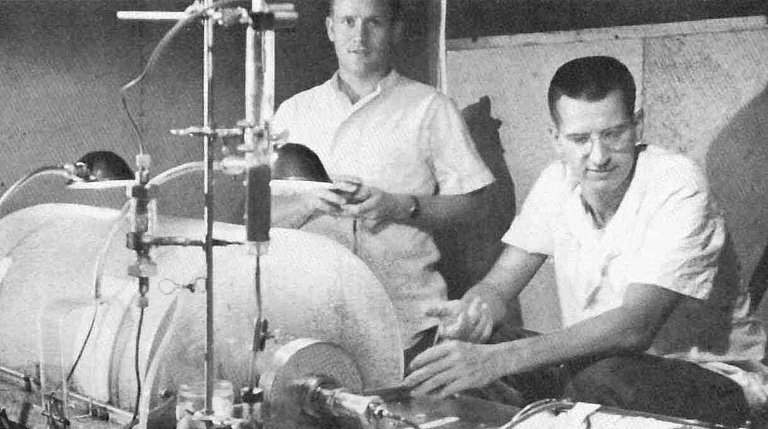
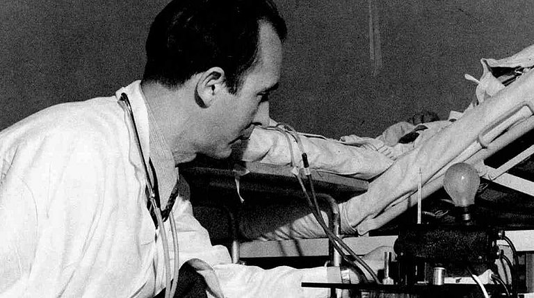

Todas as informações necessárias para que seu tratamente seja objetivo
A história da diálise
Base histórica da hemodiálise
A insuficiência renal aguda e crónica, que pode causar a morte se não for tratada durante dias ou semanas, é uma doença tão antiga como a própria humanidade. Na Roma antiga e, mais tarde, na Idade Média, os tratamentos da uremia incluíam o uso de banhos quentes, terapias de sudação, sangrias e clisteres. Os procedimentos atuais para o tratamento da insuficiência renal incluem processos físicos como a osmose e a difusão, que estão amplamente generalizados e ajudam no transporte de água e substâncias dissolvidas.

Manuscrito de Thomas Graham, "Bakerian Lecture", o "Pai da diálise"
As primeiras descrições científicas destes procedimentos remontam ao século XIX e são da autoria do químico escocês Thomas Graham, que ficou conhecido como o «pai da diálise». Inicialmente, a osmose e a diálise tornaram-se populares como métodos utilizados em laboratórios químicos que permitiam a separação de substâncias dissolvidas ou a remoção de água de soluções através de membranas semipermeáveis.
Bastante avançado para o seu tempo, Graham indicou, no seu trabalho, os usos potenciais desses procedimentos na medicina. Atualmente, a hemodiálise descreve um procedimento extracorpóreo, ou fora do corpo, para a filtragem das substâncias urémicas do sangue dos doentes que sofrem de doença renal.
Os primórdios da diálise
A primeira descrição histórica deste tipo de procedimento foi publicada em 1913. Abel, Rowntree e Turner «dialisaram» animais anestesiados, canalizando o seu sangue para fora do corpo através de tubos de membranas semipermeáveis feitas de colódio, um material à base de celulose. É impossível afirmar com absoluta certeza se Abel e os seus colegas pretendiam utilizar este processo para tratar a insuficiência renal desde o primeiro momento.
No entanto, não restam dúvidas de que, atualmente, o tratamento de diálise continua a utilizar elementos importantes da máquina de vividifusão de Abel. Para que o sangue pudesse atravessar o «dialisador» era necessário inibir, pelo menos temporariamente, a sua capacidade de coagular. Abel e os seus colegas utilizaram uma substância conhecida como hirudina, que tinha sido identificada como o elemento anticoagulante da saliva de sanguessugas em 1880.

Dr. Georg Haas a fazer diálise em um doente na Universidade de Giessen
Frankfurt, realizou os primeiros tratamentos de diálise em seres humanos. Pensa-se que Haas dialisou o primeiro doente com insuficiência renal na Universidade de Giessen, no verão de 1924, depois de realizar experiências preparatórias. Até 1928, Haas dialisou mais seis doentes, dos quais nenhum sobreviveu, provavelmente devido à situação crítica dos doentes e à eficácia insuficiente do tratamento de diálise. O dialisador de Haas, que também utilizou uma membrana de colódio, foi fabricado em diversos modelos e tamanhos.
Tal como Abel, Haas usou hirudina como anticoagulante nos seus primeiros tratamentos de diálise. No entanto, esta substância provocava frequentemente complicações consideráveis devido a reações alérgicas, uma vez que não era purificada corretamente e era proveniente de uma espécie muito distante da espécie humana. Na sua sétima e última experiência, Haas usou heparina, que é o coagulante universal nos mamíferos. Esta substância causava significativamente menos complicações do que a hirudina, mesmo quando purificada de forma insuficiente, e podia ser produzida em quantidades muito maiores. Na sequência do desenvolvimento de melhores métodos de purificação, em 1937, a heparina foi adotada como o anticoagulante adequado, e continua a ser utilizada nos dias de hoje.
O primeiro tratamento de diálise bem-sucedido
No outono de 1945, Willem Kolff, dos Países Baixos, fez a descoberta que teimosamente escapou a Haas. Kolff usou um rim com tambor rotativo que tinha criado para efetuar um tratamento de diálise, com a duração de uma semana, num doente de 67 anos que tinha sido internado no hospital com insuficiência renal aguda.
Willem Kolff, que realizou o primeiro tratamento de diálise bem-sucedido
O doente recebeu posteriormente alta, com a função renal normalizada. Os resultados obtidos com este doente demonstraram que o conceito desenvolvido por Abel e Haas podia ser posto em prática e, desse modo, constituiu a primeira grande inovação no tratamento de doentes com doença renal. O sucesso deveu-se, em parte, a melhorias técnicas no equipamento utilizado no tratamento. O rim com tambor rotativo de Kolff utilizava tubos membranosos fabricados com um novo material à base de celulose, conhecido como celofane, que era utilizado na embalagem de alimentos.
Durante o tratamento, os tubos com sangue eram presos a um tambor de madeira que rodava através de uma solução eletrolítica conhecida como «dialisante». À medida que os tubos membranosos atravessavam o banho, as leis da física faziam com que as toxinas passassem para este líquido de lavagem.
Rim com tambor rotativo
Exemplares do rim com tambor rotativo de Kolff cruzaram o Atlântico e chegaram ao Hospital Peter Brent Brigham, em Boston, onde foram objeto de uma melhoria técnica importante. As máquinas modificadas tornaram-se conhecidas como rim artificial Kolff-Brigham e, entre 1954 e 1962, foram enviadas de Boston para 22 hospitais em todo o mundo.
O rim Kolff-Brightman tinha acabado de ser posto à prova com sucesso em condições extremas, durante a Guerra da Coreia. O tratamento de diálise aumentou a taxa de sobrevivência média dos soldados que sofriam de insuficiência renal pós-traumática, o que permitiu ganhar tempo para outros procedimentos clínicos.

Diálise aguda durante a Guerra da Coreia, em 1952
Diálise e ultrafiltração
Uma das funções mais importantes do rim natural, além da filtração de toxinas urémicas, é a eliminação do excesso de água. Quando o rim falha, esta função tem de ser executada pelo rim artificial, também conhecido como dialisador. O procedimento através do qual a água plasmática do doente é comprimida através da membrana do dialisador mediante pressão é denominado ultrafiltração.
Em 1947, o sueco Nils Alwall publicou um trabalho científico que descrevia um dialisador modificado que podia executar a combinação necessária de diálise e ultrafiltração de forma mais eficaz do que o rim original de Kolff. As membranas de celofane utilizadas neste dialisador podiam suportar uma pressão mais elevada devido ao seu posicionamento entre duas grelhas metálicas de proteção. As membranas estavam todas colocadas num cilindro hermeticamente fechado para que pudessem ser gerados níveis de pressão diferentes.

Nils Alwall in 1946 with an early model of the dialysis machine
O Acesso Vascular e a Diálise
Belding Scribner fez uma descoberta neste domínio em 1960, nos Estados Unidos, com a criação do que mais tarde seria conhecido como «acesso vascular de Scribner» Este novo método proporcionou uma forma relativamente simples de aceder ao sistema circulatório de um doente que podia ser utilizada durante vários meses, o que significava que, pela primeira vez, os doentes com doença renal podiam ser tratados com diálise. O acesso vascular estava colocado numa pequena placa que era fixada no corpo do doente, por exemplo, no braço. Duas cânulas em teflon eram implantadas cirurgicamente, uma numa veia e outra numa artéria. Fora do corpo, as cânulas eram unidas num curto-circuito circulatório, daí a designação «acesso vascular». Durante a diálise, o acesso vascular era aberto e ligado ao dialisador.
Belding H. Scribner (1921 - 2003)
Em 1962, foram introduzidos acessos vasculares melhorados, feitos integralmente de materiais flexíveis. No entanto, a descoberta mais decisiva no domínio do acesso vascular surgiu em 1966, da autoria de Michael Brescia e James Cimino, cujo trabalho continua a ter uma importância fundamental para a diálise nos dias de hoje. Durante um procedimento cirúrgico, ligaram uma artéria a uma veia no braço. A veia não era normalmente exposta a uma tensão arterial elevada e aumentou consideravelmente de volume. Assim, as agulhas podiam ser colocadas com mais facilidade nesta veia, que se encontra por baixo da pele, para permitir o acesso repetido.
Esta técnica reduziu o risco de infeção e permitiu que um tratamento de diálise fosse realizado durante vários anos. A fístula arteriovenosa continua a ser o acesso preferencial para os doentes em diálise e algumas fístulas arteriovenosas implantadas há mais de 30 anos ainda são utilizadas atualmente.
O primeiro doente em Hemodiálise
Esta evolução permitiu o tratamento a longo prazo de doentes com insuficiência renal crónica. No verão de 1960, Scribner implantou um acesso vascular num cidadão americano, Clyde Shields, em Seattle. Shields tornou-se o primeiro doente em hemodiálise, o tratamento de diálise permitiu-lhe viver durante mais onze anos antes de falecer de doença cardíaca. Estes sucessos proporcionaram uma base fértil para o primeiro programa de hemodiálise no mundo, que foi estabelecido em Seattle nos anos seguintes.
Clyde Shields (1921 - 1971)
Nessa altura, Scribner e a sua equipa abdicaram de pedir a proteção conferida pela patente de muitas das suas invenções e inovações para garantir a rápida distribuição das suas técnicas salvadoras de vidas aos doentes em diálise. O desenvolvimento de métodos melhorados para aceder aos vasos sanguíneos significava que os doentes com doença renal crónica poderiam, pela primeira vez, receber um tratamento eficaz.
No entanto, no início da década de 1970, um tratamento de diálise demorava cerca de doze horas e era extremamente caro devido ao elevado preço dos materiais e do próprio tratamento. Em consequência, nem todos os doentes renais tinham acesso a esta terapia que salvava vidas. Nos Estados Unidos, por exemplo, a distribuição do pequeno número de tratamentos disponíveis era decidida por comités, num processo de decisão de vida ou morte.
Hemodiálise Moderna
Após os primeiros êxitos em Seattle, a hemodiálise consolidou-se como o tratamento preferencial para a insuficiência renal crónica e aguda a nível mundial. As membranas, os dialisadores e as máquinas de diálise foram continuamente melhorados e fabricados industrialmente em quantidades cada vez maiores. Um progresso importante foi o desenvolvimento do primeiro dialisador de fibras ocas, em 1964. Esta tecnologia substituiu os, até então, tradicionais tubos membranosos e membranas lisas por membranas ocas de dimensão capilar.
Este procedimento permitiu a produção de dialisadores com uma área de superfície suficientemente grande para dar resposta às exigências do tratamento de diálise eficiente. Nos anos que se seguiram, graças ao desenvolvimento de tecnologias de fabrico industrial adequadas, tornou-se possível produzir grandes quantidades de dialisadores descartáveis a preços razoáveis.
A máquina 6008 CAREsystem da Fresenius Medical Care
Atualmente, os dialisadores são fabricados com polissulfona inteiramente sintética, um plástico que apresenta uma eficiência de filtração e uma tolerabilidade excelentes para os doentes. Os dialisadores ainda são baseados nessas tecnologias. As máquinas de diálise mais avançadas também monitorizam os doentes para assegurar a deteção e o tratamento de situações críticas numa fase inicial. Possuem sistemas eficientes de monitorização e de gestão de dados e a sua utilização tem sido simplificada nos últimos anos. Um número cada vez maior de máquinas de diálise da última geração também utiliza equipamentos controlados por computador, tecnologias online, sistemas de redes e software especializado.
As the clinical use of hemodialysis became increasingly widespread, scientists were better able to investigate the unique attributes of patients with chronic kidney disease. In contrast to the early years of dialysis presented here, the lack of adequate treatment methods or technologies is no longer a challenge in the treatment of kidney patients. The present challenges stem rather from the large number of patients requiring dialysis treatment, the complications resulting from years of dialysis treatment, and a population of patients that presents demographic as well as medical challenges; a population whose treatment would be unimaginable, were it not for the pioneering work presented here.